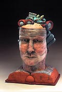
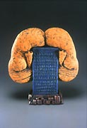
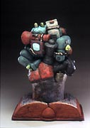
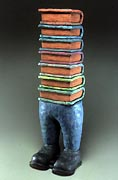
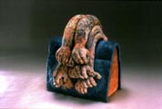
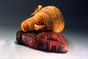
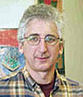

|
Allan Rosenbaum
American ceramist.

American ceramist Allan
Rosenbaum makes humorous, narrative figurative sculpture
and sculptural teapots.

In 1978 Rosenbaum earned a BS at the University of Wisconsin and
in 1986 an MFA at Virginia Commonwealth University, where he has
taught since graduating. His awards include Wisconsin Arts Board
Project grants in 1978, 1982, 1984, faculty research grants in 1989
and 1994, a Virginia Commission for the Arts Individual Artist Fellowship
in 1996 and School of the Arts Research Leave Awards in 1997 and
2001. His public commissions include a bronze sculpture for the
City of Richmond in 1999 and commissions by Virginia for the Arts
in 2000 and Virginia Commonwealth University in 2002, 2003 and 2004.

His whimsical figurative sculptures are influenced by funk, often
featuring parts of the human body in conjunction with household
items. Some are reminiscent of Surrealism, in particular the works
of Renée Margritte. They are fired multiple times to achieve
richly patinated surfaces. R. cites Robert Arneson as his main influence.


Artist's Statement
The
sculptures I make weave together objects and images that are culled
from personal memories, art history, domestic interiors and urban
environments. By creating sculptures that are composed of combinations
of familiar images, I hope to shed new light on the metaphorical
possibilities of the figure and of the objects in our everyday world.
Through my work, I raise questions about the nature of human relationships,
the need for security, our methods of communicationm the search
for identity and the importance of community. My work negotiates
a balance between the real and the imaginary - between our daily
experiences and our dreams.
More Artists of the Week
More Articles
|
{kind=link}
{kind=link}
{kind=link}
{kind=link}
{kind=link}